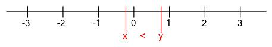
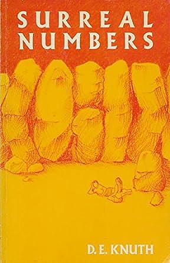
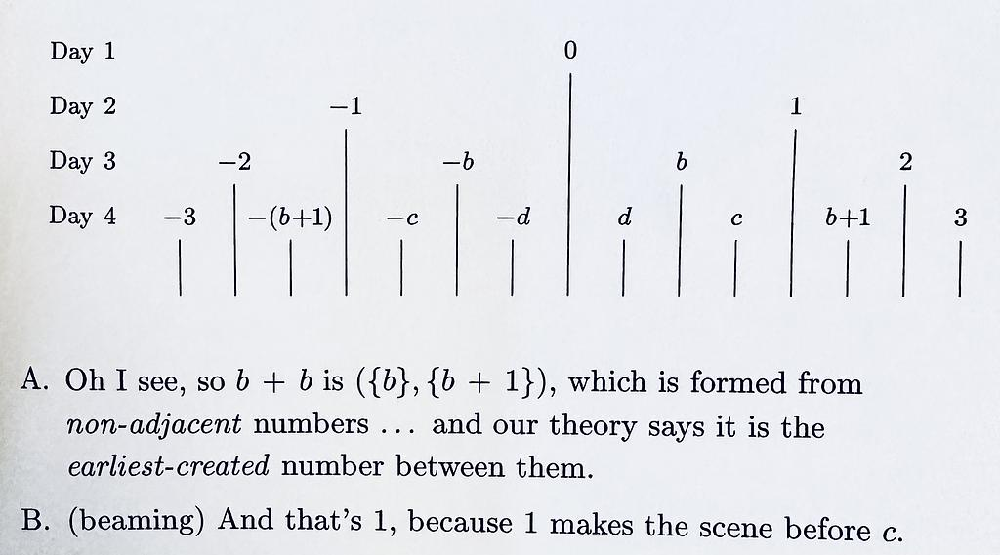
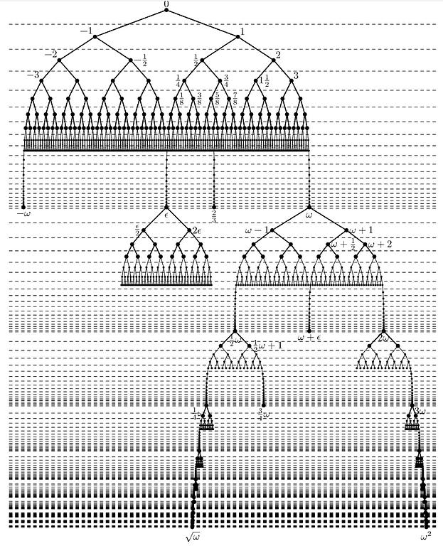

Yesterday I introduced Transfinite numbers, and today is going to be surreal. The real numbers ℝ are usually visualized as a number line:

real_number_line.jpg4.85 KB The real number line ℝ contains 0, all the positive integers and negative integers, all the fractions (rationals), and all the irrational numbers like √2, π and e. The previous post introduced transfinite ordinal numbers, which I'll hand-wave at here to give an intuition, but read the previous post if this isn't clear to you:
0,1,2,3,...,ω,ω+1,ω+2,....,2ω,3ω,....,ω²,ω³,...
The transfinite ordinal number ω is the smallest non-finite ordinal number. It's the number that comes after counting up from 0, one at a time, after a countably infinite number of steps. It doesn't stop. What we will get to in this post is the definition of the surreal number line. It includes the reals, the transfinite ordinals, and as a bonus, it contains the infinitesimals, which are infinitely small numbers that Isaac Newton worked with when he invented calculus.
The source material for this post is a lovely little book, Surreal Numbers, by Donald E. Knuth, the Yoda of Computer Science. He's a mathematician, a devout Lutheran, a computer scientist, an artist, a perfectionist, a scholar and a gentleman. He's the kind of obsessive who set out to write a book, the Art of Computer Programming, in 1962, and then it ballooned into multiple volumes, and he's still not done today, but the volumes he has released so far are excellent, and no I have not finished reading them either.

surreal_numbers.jpg21.2 KBHere is an excellent Numberphile video interviewing D.E. Knuth about the surreal numbers.
In the book, Alice and Bill are on a deserted island and become bored with their life, and then decide to seek out something intellectually stimulating, only to discover an ancient stone with what appears to be a genesis story on it:
In the beginning, everything was void, and J. H. W. H. Conway began to create numbers. Conway said, "Let there be two rules which bring forth all numbers large and small. This shall be the first rule: Every number corresponds to two sets of previously created numbers, such that no member of the left set is greater than or equal to any member of the right set.
And the second rule shall be this: One number is less than or equal to another number if and only if no member of the first number's left set is greater than or equal to the second number, and no member of the second number's right set is less than or equal to the first number." And Conway examined these two rules he had made, and behold! They were very good.
And the first number was created from the void left set and the void right set. Conway called this number "zero," and said that it shall be a sign to separate positive numbers from negative numbers. Conway proved that zero was less than or equal to zero, and he saw that it was good.
And the evening and the morning were the day of zero. On the next day, two more numbers were created, one with zero as its left set and one with zero as its right set.
And Conway called the former number "one," and the latter he called "minus one." And he proved that minus one is less than but not equal to zero and zero is less than but not equal to one. And the evening
From this fragment, they recover a definition of number, and a rule for deciding which of the two numbers is bigger than the other. As a spoiler, these are the surreal numbers.
Translating it from the prose into mathematical notation:
So a surreal number is defined as a pair of sets of surreal numbers. This recursive definition bottoms out at 0. That is, we can start by defining 0 as:
$$0 = (\empty, \empty)$$
Where \( \empty \) is just the empty set: \( \empty = \{ \} \). Once you have 0, you can start building 1 and -1, and Alice discovers that any \( (\empty, X_R)\) or \( (X_L, \empty)\) will be a valid surreal number, so it follows that there must be infinitely many surreal numbers.
Definition of the ordering relation ≤ on the surreals
If \(x\) and \(y\) are surreal numbers, then we define \(x \leq y\) as:
$$x \leq y \text{ means } X_L \not\geq y \text{ and } x \not\geq Y_R$$
Recursively constructing the surreals
Using the definitions above, Alice and Bill construct 0, 1, -1, and four mystery numbers that they call a, b, c and d:

surreals_day4.jpg593 KBThey discover that b = 1/2, c = 3/4 and d = 1/4. If this construction method continues for n days, then there will be 2ⁿ surreal numbers, growing exponentially in the number of days. If you carry this out for a countably infinite number of days, that is: ω days, then you do not get the entire surreal number line, but you do get a set called the Dyadic rational numbers. These numbers have a few interesting properties, first: they all form finite binary sequences when expressed in base 2. Second: they are dense in the reals, which means that you can construct sequences of dyadic rationals which converge to any real number. In this way, the Dyadic rationals can be put into sets to represent real numbers like π or e which are neither dyadic rationals nor even rational.
So after ω days we can begin constructing the reals ℝ. After ℝ though, we can go higher, for example, how do you write ω as a surreal number?
What about ω = (ℕ, ∅)?
Is it larger than any natural number n? Since n = ({n-1}, ∅) Consider the expression:
We know that there are no natural numbers n-1 that are ≥ ω, nor are there any elements in the empty set ∅ which are ≤ n. So after all the finite integers and dyadic rationals have been constructed, the first transfinite ordinal can be constructed as ω = (ℕ, ∅)
This recursive process can keep continuing up through the heights of the transfinite ordinals, through Cantor's paradise, to produce the whole glorious line (this is best visualized as a tree):

surreal_number_tree.jpg470 KB The number ε (epsilon) in the tree above is a number that is greater than 0, but smaller than all positive real numbers. This is the first so-called infinitesimal. Infinitesimals are something that Isaac Newton used to invent calculus, but the joyless rigor police teamed up with Emperor Napoleon and Augustine-Louis Cauchy to cancel our beloved infinitesimals and replace them with limits of sequences of real numbers. It wasn't until J.H. Conway discovered the surreal numbers that the truth behind Newton's infinitesimals could be proven and integrated into Cantor's paradise. (Okay, this is not exactly how the history played out, but still, Newton was right, Cauchy delivered rigor, but every calculus student learning Cauchy's limit definition of the derivative has been robbed of a very intuitive understanding of calculus).
If you want to differentiate a function f(x), you can use ε and compute:
And it's actually just a fraction, where f(x + ε)-f(x) is infinitesimal, and ε is infinitesimal, and the fraction is a real number. Newton waved his hand and did this without the proofs made possible by the definition of surreal numbers, but his intuition was correct. Newton was right.